The News Application is a React-based frontend that displays market reports and trading signal information within the signals platform. It provides a comprehensive interface for viewing detailed signal analysis, market reports, and technical indicators through a tabbed modal system. The application presents signal recommendations, market analysis, and diagnostic information in markdown format with export capabilities.
For information about the backend signal processing that generates this data, see Signal Processing Pipeline. For wallet and order management functionality, see Wallet Application.
The News Application follows a modal-based architecture using the react-declarative framework. The main entry point is through the useOrderInfoView hook, which manages a multi-tabbed modal system for displaying signal information and related reports.

The core of the News Application is the signal information display system, which presents trading signal data through a structured form interface defined in info_fields.tsx. The system displays signal properties, recommendations, and diagnostic information.

The main signal information includes:
| Field | Purpose | Display Logic |
|---|---|---|
symbol |
Trading pair symbol | Direct display or "Не указан" |
price |
Market price | Formatted with $ suffix |
action |
Signal type | Mapped to Russian: buy→Покупка, wait→Ожидание, close→Продажа |
date |
Signal timestamp | Formatted as DD/MM/YYYY HH:mm |
content |
Trading recommendation | Rendered as Markdown |
info |
Reasoning/analysis | Rendered as Markdown (conditional) |
reports |
Diagnostic reports | Accessible via InfoButton |
The application supports multiple report types through a dynamic tab system. Each report type provides specialized market analysis focused on different trading strategies and technical indicators.

Each tab is conditionally visible based on available data:
// Tab visibility is controlled by report availability
isVisible: ({ strategy }) => strategy,
isVisible: ({ volume }) => volume,
// etc.
The routing system maps tab IDs to URL paths and view components:
/order_info/main → MainView (signal details)/order_info/strategy → LongView (trading strategy)/order_info/long → LongView (RSI analysis)/order_info/swing → SwingView (MACD analysis)/order_info/short → ShortView (EMA analysis)/order_info/mastodon → MastodonView (social sentiment)/order_info/volume → VolumeView (volume analysis)/order_info/price → PriceView (price analysis)The News Application integrates with backend services through REST API calls to fetch signal and report data. The data fetching system handles authentication and error management.

The data fetching process:
getSignalInfo(id)infoData.reports array to fetch individual reportsconst tabRecord = {
strategy: null, long: null, swing: null, short: null,
mastodon: null, volume: null, price: null
};
API requests include:
Authorization: Bearer ${localStorage.getItem("tradegpt-token")}Content-Type: application/jsonrequestId and serviceName: "info-app"The News Application provides comprehensive export capabilities for both individual reports and complete signal information. Users can download content in markdown format with proper formatting and linting.

Export features include:
| Export Type | Source | Processing |
|---|---|---|
| Main Signal | generateMarkdown(report) |
Full signal data with properties, recommendation, reasoning |
| Strategy Report | data.strategy?.content |
Direct markdown content |
| Technical Reports | data.long/swing/short?.content |
Direct markdown content |
| Diagnostic Info | InfoButton component |
Debug information with linting |
The markdown generation process:
The News Application uses a consistent component structure across all report views, providing a unified user experience with markdown rendering and diagnostic capabilities.

All report view components follow the same template pattern:
The modal system provides: